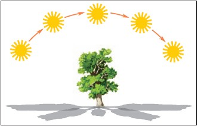

Тень дерева в разные периоды дня
Иллюстрация прямолинейности света
Конвертер скорости
Конвертер температуры
Конвертер длины
Конвертер массы
Конвертер площади
Конвертер объема
Конвертер давления
Задачи

Тень дерева в разные периоды дня
Иллюстрация прямолинейности света